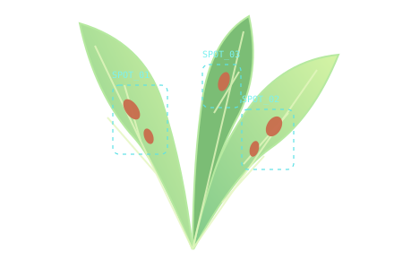

Robotics✳Edge AI✳Machine Learning✳Computer Vision✳Embedded Systems
01 / SELECTED WORK
Ideas, put into practice.
Exploring real-world problems through AI and connected systems.
01 / COMPUTER VISIONFEATURED PROJECT

AI FOR AGRICULTURE
Rice Leaf Disease Detection
Neuro-Symbolic AI-Driven Rice Leaf Disease Detection System
My main project explores neuro-symbolic AI for identifying disease in rice leaves, bringing together visual learning and knowledge-based reasoning in an agricultural context.
A home automation project using ESP32 and Arduino UNO. Exploring how connected microcontrollers bring software and physical devices together in everyday spaces.
I'm interested in what happens when software can see, sense, and interact with the world around it.
I'm an IoT and Robotics Engineering undergraduate at University of Frontier Technology, Bangladesh. My interests span robotics, Edge AI, machine learning, computer vision, and embedded systems.
From rice leaf disease detection to smart home automation, my projects give me a way to explore the connection between intelligent algorithms and physical systems.